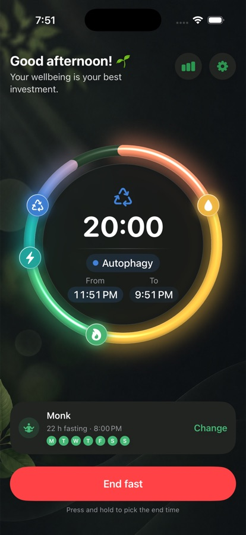
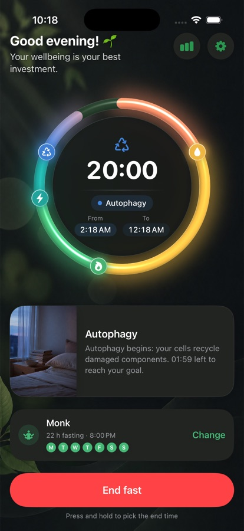
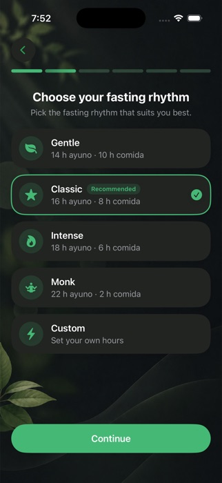
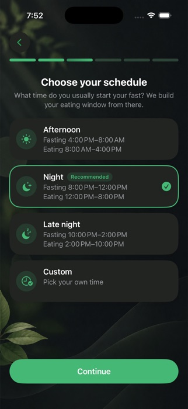
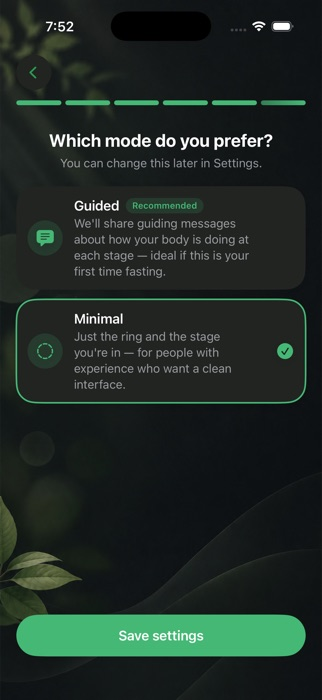
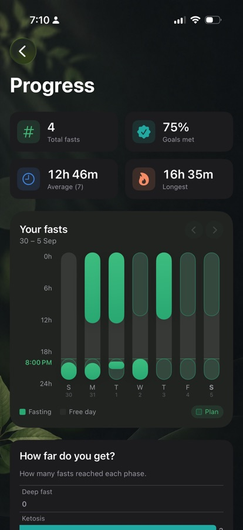
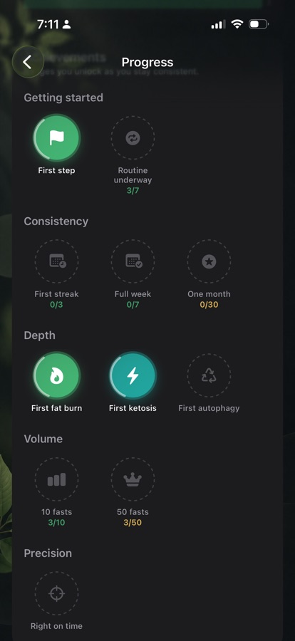

Fastitude helps you build a fasting routine around your life — not the other way around.
Private by design. No account. No cloud. No ads.
Download on the App Store
Everything you need to stay focused. Nothing you don't.
Your fasting time is always clear. No confusing stages or unnecessary noise.
See your progress from your Lock Screen, Dynamic Island, or Home Screen.
Choose your own fasting windows or let Fastitude help you build a rhythm.
Understand how your fasting habits change over time.
Start when you're ready. Fastitude quietly keeps track of the rest.

There isn't one perfect fasting schedule. Your routine should work with your life.

Tell Fastitude what your day looks like.

Receive a schedule based on your routine.

Use guidance when you need it. Keep things simple when you don't.
Every fast is recorded automatically, helping you see your consistency and patterns over time.

See exactly when you fasted, not just how long.

Milestones that show up as you stay consistent.
Your fasting history stays on your device.
Simple, private, and built around your life.
Download on the App StoreNo account required.